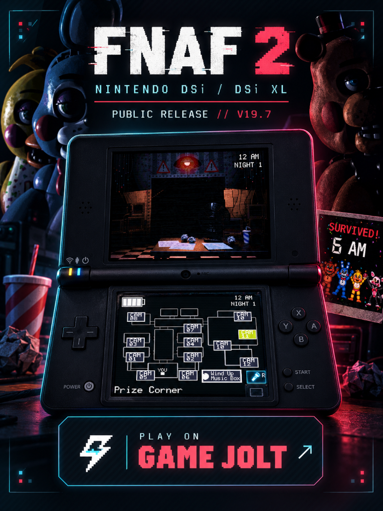

Sistema de câmeras
Tablet interativo, alternância de salas, iluminação e interface distribuída entre duas telas.
Uma reimplementação por engenharia reversa com interface própria, mecânicas adaptadas e interação nativa nas duas telas do Nintendo DSi XL.
 DSi EMULATOR CAPTURE // OFFICE
DSi EMULATOR CAPTURE // OFFICEEste projeto independente estuda comportamentos observáveis do FNAF 2 e reimplementa sistemas em C/C++, com interface original para as duas telas do DSi. Não tivemos acesso ao código-fonte original; fonte V19.6.2 e ROM V19.7 são versões distintas.
Tablet interativo, alternância de salas, iluminação e interface distribuída entre duas telas.
Comportamentos, rotas, janelas de reação e balanceamento entre noites.
Menu, introdução, cutscenes, carregamento, Game Over e vitória.
Visite a página da ROM publicada V19.7, acompanhe novidades e confira as opções de download. A fonte navegável disponível é V19.6.2; não há evidência de equivalência entre ambas.
Projeto não oficial de fã. Disponibilidade dos arquivos conforme a página de lançamento.
ROM publicada: V19.7 · Fonte disponibilizada: V19.6.2.

Gravação de gameplay realizada em um computador usando um emulador de Nintendo DSi. Veja as duas telas do jogo, menus e a experiência desenvolvida.
Capturas enviadas pelo desenvolvedor. Cada imagem mantém a disposição vertical das duas telas do DSi.


Estudos de caso curtos a partir da fonte V19.6.2. “Implementado no código” não significa validação completa da ROM nem teste em hardware.
Problema A transição para a primeira noite podia travar durante a preparação de imagens e áudio.
Investigação A documentação V19.3 descreve arrays permanentes grandes e a música do título mantida além da tela de título.
Decisão Título, WARNING e jornal passaram a ser lidos do NitroFS; a música temporária é encerrada e liberada antes das cutscenes/gameplay. loadNitroRaw() retorna falha se o arquivo não abre ou a leitura é incompleta; o chamador decide como reagir.
Resultado verificável A estrutura está descrita no histórico V19.3 e na fonte disponibilizada; isso não comprova a mesma implementação na ROM V19.7 nem teste físico.
Habilidades: depuração · gerenciamento de memória · tratamento de recursosEvidência: README-V19.4.md (histórico V19.3) + main.c (fonte V19.6.2). loadNitroRaw() / main.c ↗Explorar source/ ↗Problema O relato do processo aponta regressões de memória e estabilidade após uma tentativa de pré-carregamento mais complexa; o pacote de fonte auditado não contém um registro independente desse episódio.
Investigação Segundo o relato, a estrutura de carregamento/renderização da V18 foi retomada preservando outras mudanças. Isso não está corroborado por um histórico versionado no pacote disponibilizado.
Decisão A abordagem descrita limita recursos simultâneos e aceita leituras durante carregamentos em vez de assumir que tudo deve ficar residente.
Resultado verificável Trata-se de um relato de processo, não de conclusão medida. Não há benchmark comparativo ou dado publicado de fluidez.
Habilidades: depuração · análise de regressão · trade-offs de recursosEvidência: relato de processo fornecido; não corroborado no pacote de fonte auditado.Problema A presença de Mangle, o estado da lanterna e a imagem da câmera são fatos diferentes.
Investigação Em CAM 12, a lógica escolhe estado escuro com a luz apagada; com luz acesa, escolhe o frame vazio ou o frame de Mangle conforme sua localização lógica.
Decisão A seleção de frame consulta a luz e o estado de localização separadamente.
Resultado verificável As três condições explícitas aparecem em nightCameraFrame() na fonte; testes automatizados cobrem a lógica da IA/câmera, mas não substituem validação visual em jogo.
Habilidades: máquinas de estados · lógica de gameplay · testesEvidência: night_ai.c e testes da suíte camera/ai V19.6.2. nightCameraFrame() ↗Problema O aviso de perigo deve refletir a presença lógica no corredor, não se a lanterna está ligada ou se o monitor está aberto.
Investigação nightHallwayAudioActive() verifica as posições dos animatrônicos no corredor e encerra o aviso em estados de derrota/vitória.
Decisão hall.raw é carregado em buffer e reproduzido como loop de hardware quando há animatrônico no corredor; não depende de luz/monitor. Sem ameaça, o canal é parado. Separadamente, quando a IA sinaliza saída do corredor enquanto a luz central está ativa, a luz é bloqueada por 4 s após soltar o comando; mantê-lo pressionado estende o bloqueio.
Resultado verificável Comportamento visível na fonte V19.6.2; não é confirmação de mixagem ou funcionamento em V19.7/hardware.
Habilidades: máquinas de estados · ciclo de vida de áudioEvidência: night_ai.c, office.c e office_state.c; código V19.6.2. nightHallwayAudioActive() ↗Problema Feedback apontou ataques quase instantâneos e pouco tempo para reagir, especialmente com Withereds.
Investigação As regras usam rotas, nível de IA por noite e janelas de máscara; o registro V19.6.2 descreve mínimo de 1500 ms para Withereds e 1667 ms na Noite 1.
Decisão Ajustar prazos por ameaça/noite e iniciar a janela após o frame do escritório ser apresentado, para não consumir reação durante leitura/renderização.
Resultado verificável O relatório lista testes de cenários de espera de renderização, defesa e expiração. Não há alegação de balanceamento perfeito nem teste de gameplay em emulador/hardware.
Habilidades: lógica de gameplay · balanceamento iterativo · testesEvidência: README_V19.6.2.md, night_ai.c e testes V19.6.2. nightMaskReactionMilliseconds() ↗Na tela superior acontece a ação; na inferior, o jogador interage com um centro de segurança personalizado. Cada comando foi pensado para o formato portátil, sem reduzir o jogo a um vídeo ocupando apenas uma tela.
Toque nas salas do mapa na tela inferior para trocar a visualização da câmera na tela superior.
Acesse luzes do corredor e das ventilações e equipe a máscara pelo painel de controles.
Abra ou feche o tablet, consulte as câmeras e gerencie o sistema de vigilância sem perder a organização das duas telas.
Fluxos próprios de vitória, relatório de turno e botões de continuar ou retornar ao menu.
Custom Night está implementada na fonte V19.6.2: dez ajustes de IA de 0 a 20, presets, navegação por toque/botões e início da Noite 7. Isso não confirma validação completa na ROM V19.7 nem em hardware; os nomes dos presets não provam fidelidade às regras do original.
Animações de loading, terminal de inicialização, telas de Game Over e vitória e estados de menu desenvolvidos para esta versão.
A assinatura por stylus só registra traços dentro da caixa SIGN HERE; CLEAR limpa e APPLY só é habilitado após assinatura. A fonte também implementa a alternativa de assinar com L.
Progresso salvo alimenta Continue e desbloqueios; cutscenes usam um terminal na tela inferior. O armazenamento pode falhar, então não se promete save quando a escrita não está disponível.
A fonte implementa a transição animada de 5 para 6 AM, comemoração e documentos por noite, Game Over com Retry/Menu e animações de loading. Câmeras, máscara, luzes, áudio e bateria se conectam ao estado do jogo.
A comparação abaixo mostra os requisitos mínimos anunciados para o jogo original no PC e os recursos físicos do console. Esses valores não equivalem a um benchmark direto: representam plataformas e modelos de execução diferentes.
Engenharia reversa aqui é observar comportamentos e reimplementar sistemas; não houve acesso ao código-fonte original. O trabalho não é um porte do executável Windows. A fonte disponibilizada e a ROM publicada são versões distintas, e suas equivalências não foram demonstradas.
Nota técnica: 1 GB e 16 MB são capacidades de memória de plataformas distintas; a comparação não demonstra, por si só, consumo real de RAM do jogo.Registros do arquivo VALIDATION.json da fonte V19.6.2. Este relatório histórico foi consultado, não executado novamente nesta revisão do site.
Incluem estado, escritório, câmera, IA, cutscene, assinatura/contrato, tempo de vitória, Game Over, áudio ambiente e Custom Night.
Integridade dos conteúdos empacotados registrada para as ROMs NORMAL e DEV V19.6.2.
O relatório registra CRC do cabeçalho/banner, seções DSi, ARM7 preservado, trampoline legado e hashes SHA-256 para ambas as variantes.
VALIDATION.json marca hardware_tested=false. As notas V19.6.2 também dizem que a entrega não foi testada em emulador nem em DSi físico. Isto não é prova de validação da ROM publicada V19.7.
Um registro histórico separado da V19.3 informa 1.075.172 bytes (~1,03 MiB) para text+data+BSS do ARM9. Não inclui todas as alocações durante gameplay e não pode ser extrapolado para V19.7.
Sequência de aviso e menu em teste; mensagens de diagnóstico presentes no binário.
1.00 MiB • ROM arquivadaEstrutura de título e seleção de Night 1/Custom Night identificável.
0.94 MiB • ROM arquivadaMais conteúdo embarcado e referências nominais a animatrônicos.
2.44 MiB • ROM arquivadaReferências a cenários do escritório, frames de máscara e feed de câmera.
5.27 MiB • ROM arquivadaRegistros de carregamento de áudio, Game Over e Night Complete.
5.54 MiB • ROM arquivadaDiagnósticos de relógio/tempo e referências a componentes do escritório.
5.54 MiB • ROM arquivadaAumento significativo do binário e novos dados de chamada noturna; conteúdo exato requer código-fonte.
10.51 MiB • ROM arquivadaDiagnósticos de câmera aberta, seleção e disponibilidade de Music Box.
22.04 MiB • ROM arquivadaAmpliação do conteúdo embarcado; alterações específicas não determináveis só pela ROM.
22.67 MiB • ROM arquivadaReferências a night_intro, dream_mask e dream_puppet; marco relatado como estável.
25.60 MiB • ROM arquivadaBuild BootFix nomeada; referências adicionais a câmera estática.
25.65 MiB • ROM arquivadaTextos NIGHT SURVIVED e TAP CONTINUE presentes no binário.
25.17 MiB • ROM arquivadaNotas históricas descrevem a mudança de assets de título/jornal para NitroFS e liberação da música temporária. Referência de tamanho de memória é específica da V19.3.
Notas de desenvolvimento; não valida ROMs posterioresDocumentação da versão detalha a transição 5→6 AM e a comemoração em duas telas.
Registro histórico da V19.4Notas disponíveis descrevem fluxos de retry/menu, controles de vitória e ajustes nos recursos de interface/loading.
Registros de desenvolvimento da V19.5.xA fonte inclui ajustes de janela de reação, testes e Custom Night com níveis de IA, presets e entrada na Noite 7.
Fonte e VALIDATION.json V19.6.2A ROM publicada no repositório está identificada como V19.7. Não há fonte ou evidência fornecida que demonstre equivalência com a fonte V19.6.2.
ROM publicada: V19.7 · Fonte disponibilizada: V19.6.2Felipe Alexandre — definição e refinamento de requisitos; decisões de interface e interação nas duas telas; análise do comportamento esperado; testes, identificação de problemas e direcionamento de correções; acompanhamento das versões e validação das entregas.
Desenvolvimento assistido por IA: ferramentas de IA apoiam investigação e implementação. Minha contribuição inclui definir requisitos, decidir, analisar criticamente resultados e validar entregas. Não reivindico autoria manual de todo o código nem uma divisão de trabalho não documentada.